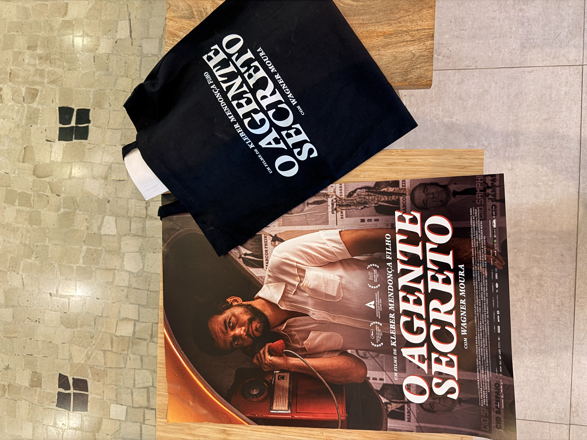

Social Media, Design Gráfico e Marketing
Planejamento de estratégias de comunicação digital, gestão de redes sociais, criação de conteúdos e desenvolvimento de materiais gráficos para marcas de diferentes segmentos.
Área: Comunicação e Marketing Digital
Ver portfólio